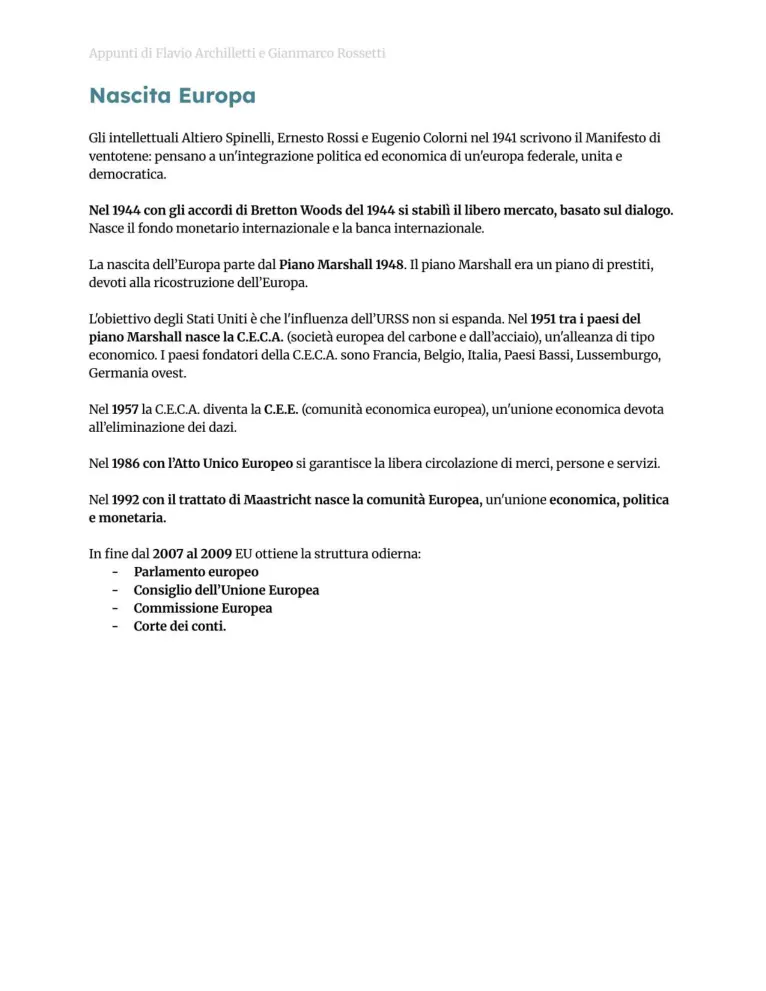

Nascita dell’Europa unita
Dal dopoguerra alla cooperazione europea: CECA, CEE, Maastricht e Unione Europea.
Studio guidato
Idea europea
Dopo due guerre mondiali, l’integrazione europea nasce per evitare nuovi conflitti, legare economicamente gli Stati e rafforzare cooperazione e democrazia.
Primi passi
Il Manifesto di Ventotene e il pensiero federalista indicano una via sovranazionale. La Dichiarazione Schuman del 1950 propone di mettere in comune carbone e acciaio.
CECA e CEE
Nel 1951 nasce la CECA. Con i Trattati di Roma del 1957 nascono CEE ed Euratom. L’integrazione procede prima sul piano economico, poi sempre più su quello politico.
Unione Europea
Il trattato di Maastricht del 1992 fonda l’Unione Europea, introduce cittadinanza europea e prepara l’unione economica e monetaria.
Euro e ampliamenti
L’euro entra nella vita quotidiana nel 2002. L’Unione si amplia a molti Paesi europei, anche se restano tensioni tra interessi nazionali e progetto comune.
Parole chiave
Pagine originali dal file
Le immagini sotto mantengono il riferimento diretto alle pagine del PDF usato come base del sito.

Quiz finale
Devi rispondere correttamente a tutte le 12 domande. Se ne sbagli anche solo una, il quiz si azzera e ricomincia da capo.